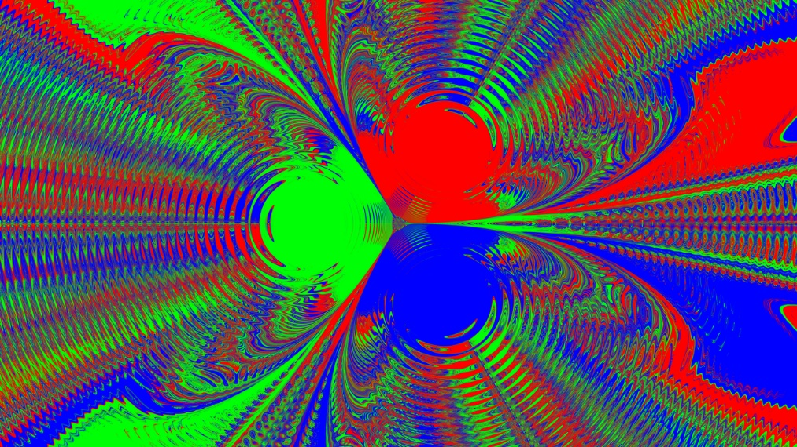

What The Three-Body Problem Gets Wrong (And Why The Real Physics Is Weirder)
I was writing about entropy last week — specifically, about why your scrambled eggs are gone forever and Loschmidt’s paradox and all that jazz — and I put in a footnote. You know how footnotes go. It’s like chocolate. You start by telling yourself, it’s just one piece, and then, before you know it, the empty wrapper is looking at you judgmentally.
I usually avoid reading books or watching series that are currently all the rage. Like fine wine, I let them mature. At some point, if they survived the test of time, I dub them marginally worthy of my attention1.
But, for my brother-from-another-mother, and for my actual brother, both of whom had enthusiastically told me to read a certain book, I made an exception.
And so, I found myself over a weekend, in between missile sirens and running for shelter, reading “The Three-Body Problem”.
I had a severe case of schizoid-split. The mystery part was nice enough. But the physics part was problematic, and made me want to put the book down pretty much after the first chapter. The initial problem was not necessarily that it was wrong. Even worse, it was obvious and pretty boring.
Let me tell you why. The title itself is “The Three-Body Problem,” which, for anyone remotely educated about physics, tells the entire story right there and then.
If you haven’t read the book. Stop! Now! You WILL read spoilers!
The three-body problem is a famous problem that can be instantiated easily at home.
Take three magnets. Glue them to the points of an equilateral triangle, which fastens them securely in place. Now, hang a magnet on a string just above the center. If you give the weighted string a slight push or pull (or probably even breathe on it too strongly), the weight will start oscillating wildly in a pattern that looks random.
However, and this is key, the pattern is anything but random.

The initial premise of the book confidently tells you that chaotic systems are fundamentally unpredictable. I called it a “childish blunder.” My editor — who is also my better half, whom I will henceforth refer to as my liege-wife — told me that footnote was “aggressively nerdy” and that I should either write the whole thing or delete it.
She was right. She is always right. This is the whole thing.
Chaos does not mean unpredictable.
I’ll say it again for the people in the back: chaos. Does not. Mean. Unpredictable.
What chaos actually means, in the technical sense, is extreme sensitivity to initial conditions. Two trajectories that start very close together will diverge — exponentially, and fast2. Given enough time and limited computing power, your predictions become useless. But — and this is crucial — if you know the initial conditions precisely enough, and you have enough computing power, you can predict a chaotic system’s future exactly.
This is not a loophole. It is the definition.
The Trisolaran astronomers watching their three suns careen through unpredictable orbits aren’t watching something fundamentally unknowable. They’re watching something computationally expensive. There’s a difference. A big one. Physics is not defeated by chaos — it’s inconvenienced by it. Chaotic systems obey differential equations just as politely as anything else. They just require more decimal places.
This matters, by the way, because the entire existential dread of the Trisolarans — and their murderous response to it — rests on this misunderstanding. Their civilization is in crisis not because physics failed them but because they’re, essentially, bad at numerical methods. Figure 1 above is an example of a fairly simple physics simulation of a three-body problem. I am now going to perform some physics3 — hold fast! Not the mind-blowing matrix-rich, curvilinear non-Euclidean flavor. Just back-of-the-envelope.
An earthbound linear pendulum has a fixed period given by T = √(l/g) where l is the length of the string and g is the gravitational acceleration on Earth’s surface.
For a planet, around a sun, the Goldilocks region — the region in which a planet can reside to be able to support life is, by the most relaxed analysis, anywhere between 0.4–10 AU (Astronomical Unit, the average distance of Earth from the Sun). Since the Trisolarian planet sometimes burns, let’s be nasty and put the minimal distance at 0.1 AU.
And, let’s be very permissive and have the Trisolarian suns be anywhere between 20 solar masses and 0.8 solar masses, which are the yellow super-giants upper mass limit, and the prime series stars lower limit, respectively.
The Trisolarian world is a spherical planet (the book mentions a horizon), and the minimal mass of a spherical planet is given by the rock-planet limit4 which is roughly 1021–1022 kg, which is a hundred to a thousand times lighter than our Earth. The heaviest limit is harder to calculate, but is approximately the brown dwarf limit (I’m playing VERY fast and loose here), which is about 2.5 × 1028 kg, or ∼0.013 solar masses.
And so let’s find the minimal possible period of the Trisolarian Earth.
That happens approximately when gravitation is strongest, and the distance is smallest,
So, a rough back-of-the-envelope calculation gives the absolute shortest period is 1.84 Earth days. That’s plenty of time to run a calculation and tell the entire population to dehydrate. On the other end, they have about 800-year stable era. But the truth is, they don’t even need that; all they ever have to do is calculate the general characteristics of the system to understand when the next chaotic/stable era will be approximately.
It’s enough to know what the current situation is, and when the current era approximately ends to make plans, build tunnels, and generally secure continuity of knowledge, science, and culture.
Now for the one that (almost) made me put the book down.
The sophons.
For the uninitiated: the plot involves unfolding a proton — a proton — into an eleven-dimensional surface, etching a circuit onto it, and then refolding it back into three-dimensional space. A supercomputer, the size of a proton, hiding in plain sight.
I want to be charitable here, because it’s a lovely image. I genuinely do.
Here’s the disappointing part. The idea of different-dimensional objects, and how higher-dimensional objects project onto our world, is almost as old as modern thermodynamics, i.e., ~150 years old.
Edwin Abbott wrote Flatland in 1884. A two-dimensional being watching a sphere pass through its plane sees a circle that appears, grows, shrinks, and vanishes — and has absolutely no framework for what just happened. The sophon is Flatland with better special effects and a significantly larger production budget.
What Liu Cixin adds to Abbott’s premise is the proton. And here the physics quietly falls apart.
But here’s the deeper problem with the sophon, one that doesn’t require a physics degree to notice.
If the Trisolarans can manipulate matter at the level of unfolding a proton into eleven dimensions, they have essentially arbitrary control over material structure and energy. The engineering gap between “refolding a proton” and “building a large shell around a star” is not even close. A Dyson sphere is, comparatively, a garden shed.
Their entire civilizational problem is chaotic stellar heating — incineration, freezing, unpredictable seasons. A sufficiently advanced adaptive shell around their planet would solve this. You don’t need to solve the three-body problem gravitationally if you can just put a roof on the planet.
The Trisolarans invented the microprocessor and keep dying of exposure because nobody thought to build a roof.
And when the book does eventually envelop their planet — in the unfolded proton itself — it gets the thermodynamics exactly backwards. The planet, we’re told, freezes.
It wouldn’t.
A shell that blocks incoming stellar radiation also blocks outgoing infrared. That’s the entire premise of greenhouse gases — the atmosphere lets sunlight in and traps heat trying to escape. Seal a planet inside an opaque shell, and you’ve built the universe’s largest greenhouse. The planet’s own geothermal heat has nowhere to go. You don’t freeze. You slowly bake in your own waste heat.
Freezing would require a shell that is simultaneously perfectly reflective on the outside and perfectly transparent to infrared from the inside. Which is a very specific engineered optical property. Which the book doesn’t claim. Which the Trisolarans, with their proton-folding capability, could certainly achieve — but apparently didn’t think to specify.
Liu Cixin handwaved the thermodynamics at exactly the moment the thermodynamics matter most. In a book downstream of a thermodynamics problem. I find this almost poetic.
Then there’s the science lock, which is where the book is genuinely clever in premise and quietly sells a false bill of goods.
The Trisolarans, threatened by humanity’s potential, deploy sophons to disrupt particle accelerator experiments — preventing us from discovering new fundamental physics. They lock our science.
The idea is irresistible as a plot device. But fundamental physics is not only done in accelerators. Cosmology, gravitational wave astronomy, precision atomic clocks, condensed matter — vast amounts of our understanding of physical law come from observations no sophon could plausibly jam. The cosmic microwave background doesn’t care about sophon interference. Gravitational waves from merging neutron stars do not pass through a particle accelerator.
Call this the Accelerator Fallacy: the assumption that particle physics is the only physics. It’s flattering to high-energy physicists, but it dramatically underestimates how many routes there are to fundamental understanding. A civilization capable of interstellar travel surely knows this.
None of this diminishes the book. It’s a remarkable piece of science fiction, and Liu Cixin is thinking at a scale that most writers don’t attempt. Getting the chaos wrong, fudging the proton geometry, missing the greenhouse physics, underestimating the breadth of science — these are the costs of ambitious science fiction, and they’re small costs.
But here’s what I keep coming back to.
The actual three-body problem in physics — the real one, the gravitational one — is already strange enough. It has no general closed-form solution. Poincaré proved that in 1887, and it helped birth chaos theory. There are beautiful special cases: the figure-eight orbit, the Lagrange points, the choreographies. But in general, three bodies under mutual gravity is a mess of sensitivity and near-misses and eventual ejections.
The real three-body problem is wild. It didn’t need embellishment.
That’s usually how it goes with physics.
Well, I guess I wasn’t that charitable, was I? …
I’m simply the worst.
Dr. Ira Wolfson is a physicist and Senior Lecturer at Braude College of Engineering, Israel. He works on thermodynamics, Bayesian epistemology, and the philosophy of science.